In this blog, I am going to show how to deploy a Machine Learning API on Azure App Service. I am assuming that you have trained your model, wrapped it into the API, and the API is running on the local machine. For this blog, I have trained a deep-learning model with help of PyTorch. The API I am going to deploy is a simple Cat vs Dog Classification API, which takes input images and returns if it is a cat or dog.  By the end of this blog you will be able to understand:
By the end of this blog you will be able to understand:
- How to create an Azure Web App
- Difference between Azure Web App and App Service.
- Deploy your API on the Azure Web App
- Test your deployment
- Bonus: How to connect the front-end to the API running on Web App.
Prerequisites:
- An Flask/FastAPI API is running locally.
- Postman - for API Testing
- Azure Account (Obviously!)
This is my folder structure. Out of these files 3 are important for deployment.
app.py- Code for API is present hereres18_10.pth- PyTorch trained modelrequirement.txt- contains the dependent packages.( If you don’t have this. You can get them doing pip freeze in the virtual environment)
All these files can be found here if want to look in more details Github repo: https://github.com/shashank2806/simple-classifier-demo
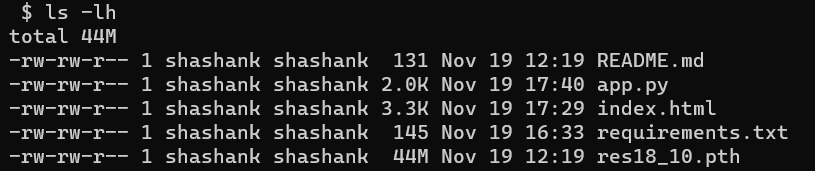
Step 0 : Test the API locally.
Test the API in the virtual environment you have developed it. If you have not developed it in a virtual environment, I would strongly suggest that you create one and install all the dependencies into it using
requirements.txt.Test it on postman.
This is my API running locally on postman, it has route named ‘/pred’ which takes images as from-data.
This is the response when I upload this image of the cat. The model predicts it is a cat, cool.

As I have tested the API on my machine. Now it is ready for deployment. 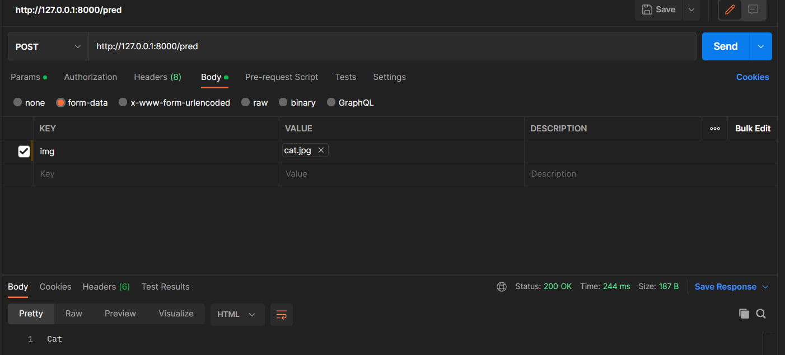
Step - 1: Create Azure Resources
I am now going to create an Azure web app. A web app is the quickest method to deploy your APIs on the cloud. It supports both code and docker containers. In this blog, we are focusing on deployment through code.
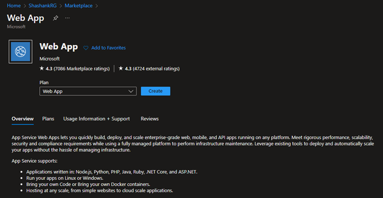
Create a web app on the Azure portal. Select the subscription and Resource Group. You need to give it a unique name. Select OS and your python version. In my case, I have selected 3.10. Select the region.
Now we have to select a app service plan. Most people have confusion between web app and app service.(Even both terms are used interchangeably) App service is the hardware on which you web app is deployed. Single App service can host multiple web apps. Keep this in mind when selecting your app service plan. I am selecting B1 plan, which is capable enough to host this API.
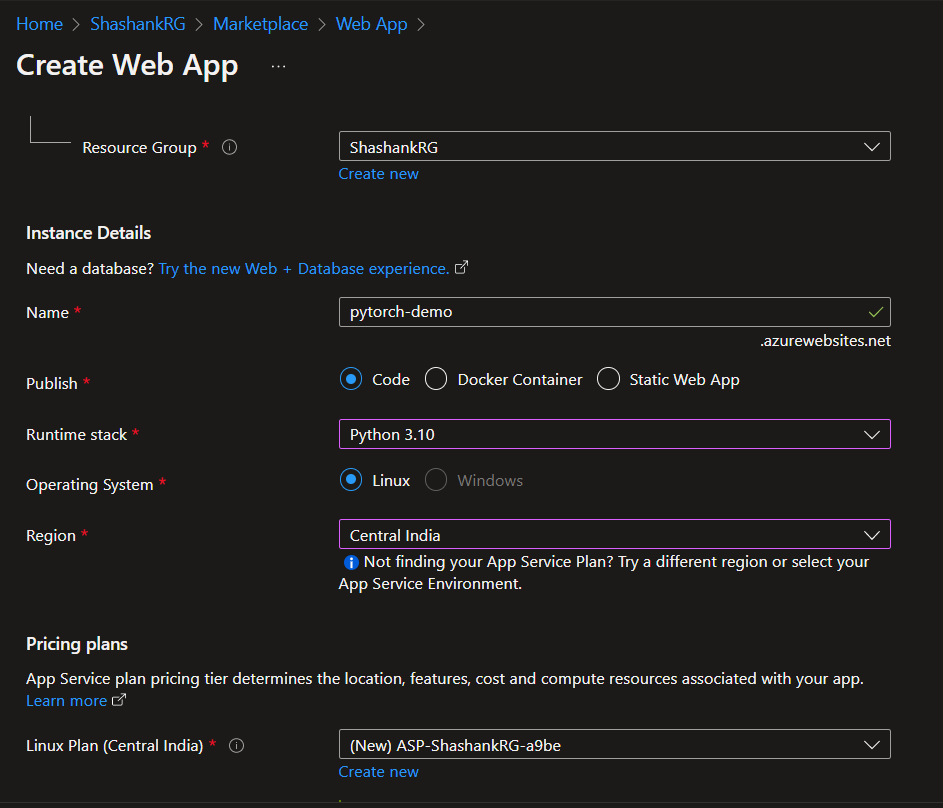 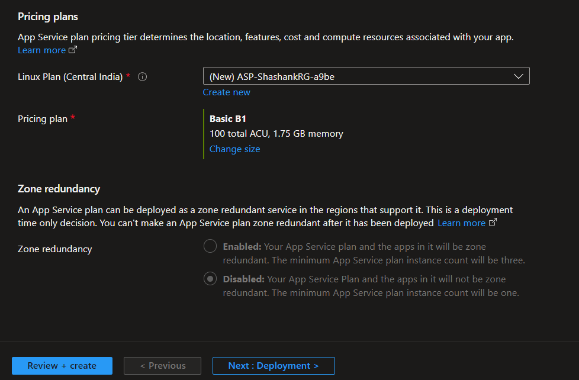
Click Review+Create
The web app is created. A URL is also assigned - https://pytorch-demo.azurewebsites.net/
This is the URL where the web app will be hosted, There is nothing there right now.
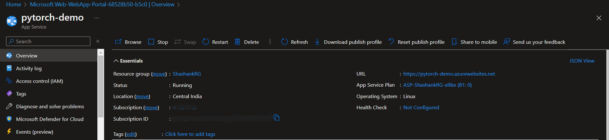
Step 2: Push code to the Web App
On the Azure Portal, go to the Deployment centre and select local git as the deployment source. You will get the git clone path, and username and password in the Credentials tab. Tip: The username is just
${web app name}, in my case$pytorch-demo, Do not enter the full username provided. 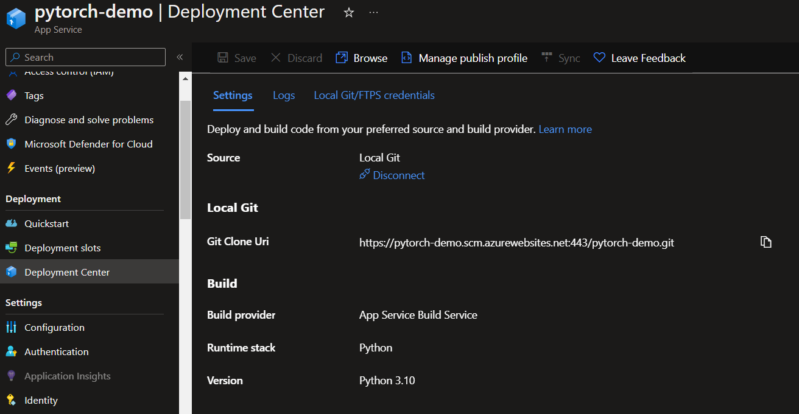Go to the directory containing the code. You can also test it on my demo code. Clone the github repo using
git clone https://github.com/shashank2806/simple-classifier-demo.gitYou needgitto be initialised (git init) in the directory, and commit (git commit) the changes you want to be uploaded.Add a new
remoteto push code. I had initially one remote(origin) pointing to my Github. I have added new remote namedazurewhich connects to web app. Usegit remote add <git-clone-uri>to add remote. 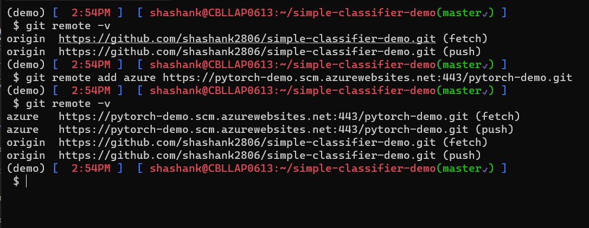Now push the code to Azure using -
git push azure master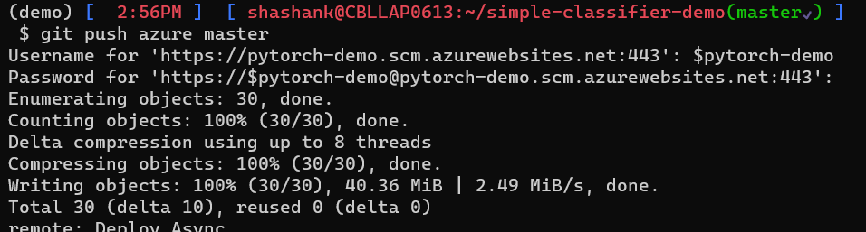Now wait for few minutes, you can see the logs on the screen. Wait until the deployment succeeds.
Voila The deplyment to the cloud is done! Now we can test it on postman.
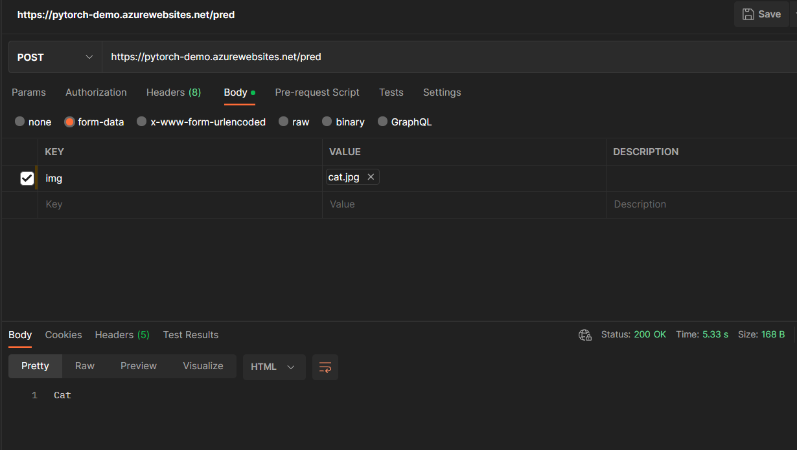
Great!! As you can see, We have deployed the API over the cloud, now anyone can access it. We just need to give the user Endpoint and Key.
Step 3: Bonus- Connect it with the front-end.
We have deployed our backend API on the web app. As you may have noticed there is an index.html in the directory. This contains a very simple front-end. We can connect the back-end API to the front-end.
The index.html is hosted through GitHub Pages(free hosting). The the hosted URL is https://shashankshekhar.me/simple-classifier-demo/
If you look into index.html, You will find a JavaScript - Fetch is used for calling the API. (You can get the code snippet to connect with help of postman.)
var requestOptions = {
method: "POST",
body: formData,
redirect: "follow",
};
// Change endpoint here
fetch("https://pytorch-demo.azurewebsites.net/pred", requestOptions)You can make some minor changes on this front-end to tailor it to your need. I have changed the Endpoint URL to the web app.
Let’s try with our cat image. On this front-end.
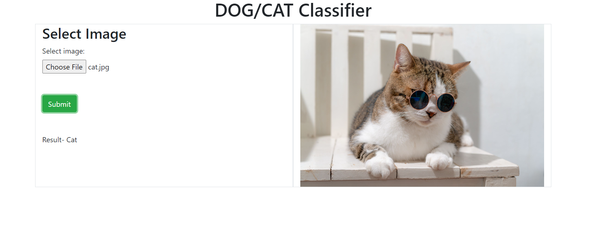 Voila! We have got the result, The API is taking to the font-end, the request we are making on our web browser is going to our API and fetching the results from there.
The API might not be responsing by the time you are looking at this web page - I will delete the App Service later.
Final Words
We now know:
- How to deploy your API on the Azure app service
- Test the API through Postman
- How to connect it to the front end. (or how to communicate with the frontend engineer about your ML API. Give them, endpoints, routes and keys/schema)
This method will work in most cases, where there are not complex dependencies, sometimes, there are OS-based dependencies for which we will have to deploy through Docker.
Enjoy. Happy Learning!!!